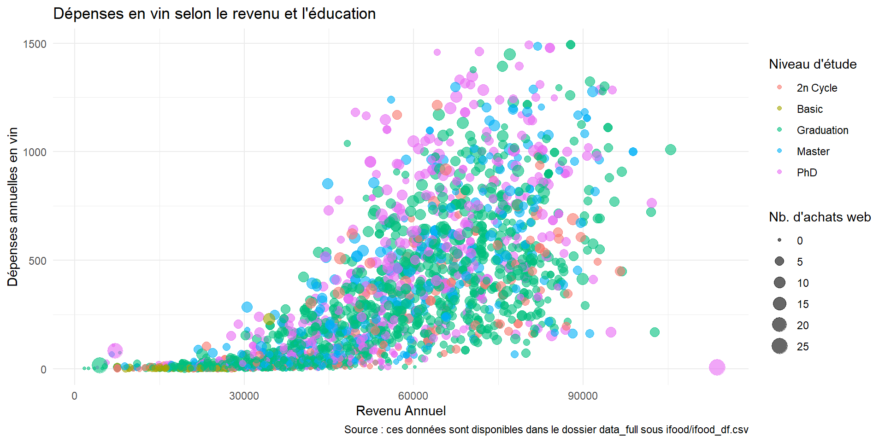
Web Data Mining & Business Intelligence
Visualisation des données, storytelling, dashboards
Olivier Caron
Paris Dauphine - PSL
Objectifs de la séance
- Maîtriser les principes de conception de graphiques clairs.
- Apprendre à transformer les données en récits visuels.
- Comprendre les fondements de la création de dashboards efficaces pour la prise de décision.
Plusieurs parties et plusieurs références
1. L’artisanat (technique)
Avec Tufte, le “bruit graphique” (chartjunk) est traqué pour ne garder que l’essentiel (Costigan-Eaves 1986).
Wilke et Healy fournissent les clés d’une “grammaire des graphiques” pour construire des visuels justes et efficaces avec ggplot2 (The Grammar of Graphics 2005; Healy 2024).
2. La narration (communication)
L’art du storytelling selon Cole Nussbaumer Knaflic permet de transformer les graphiques en récits clairs et convaincants qui guident l’audience vers l’action (Knaflic 2015, 2019).
3. La synthèse (décision)
Selon Stephen Few, les dashboards sont conçus pour respecter la perception humaine et éviter la surcharge cognitive (Few 2006).
Koen Pauwels montre comment les transformer en véritables outils de pilotage liant marketing et performance financière (Pauwels and Reibstein 2023).
Partie 1 : l’artisanat du graphique
L’objectif : la clarté
Laisser les données briller, sans distraction.
“L’excellence graphique, c’est ce qui donne au spectateur le plus grand nombre d’idées dans le temps le plus court avec le moins d’encre possible dans le plus petit espace.”
— Edward Tufte
Avant tout : regardez vos données !
Les statistiques descriptives (moyenne, variance, corrélation…) sont indispensables mais peuvent être terriblement trompeuses si elles sont utilisées seules.
Le Quartet d’Anscombe (1973) en est la preuve : données identiques mais apparences différentes une fois tracées : toujours visualiser les données avant de modéliser (EDA pour Exploratory Data Analysis).
| Propriété | Valeur |
|---|---|
| Moyenne des x | 9,0 |
| Variance des x | 10,0 |
| Moyenne des y | 7,5 |
| Variance des y | 3,75 |
| Coefficient de corrélation entre x et y | 0,816 |
| Équation de la droite de régression linéaire | y = 3 + 0,5 x |
| Somme des carrés des erreurs (par rapport à la moyenne) | 110,0 |

L’ennemi public n°1 : le “chartjunk”
Le chartjunk (ou “bruit graphique”) désigne tout élément visuel qui n’est pas essentiel à la compréhension des données. C’est du désordre qui distrait l’oeil et peut même fausser l’interprétation.
- Effets 3D inutiles : ils tordent la perspective et rendent la lecture des valeurs impossible.
- Motifs et textures lourds : ils créent des vibrations visuelles (effet de moiré).
- Couleurs criardes : l’utilisation de la couleur doit être fonctionnelle, pas décorative.
- Redondance : écrire la valeur sur la barre ET avoir un axe Y est souvent inutile.
Se focaliser sur l’essentiel
Éliminer chaque pixel qui n’est pas indispensable pour augmenter le “ratio encre-données” (Tufte).
Exemple de chartjunk à éviter
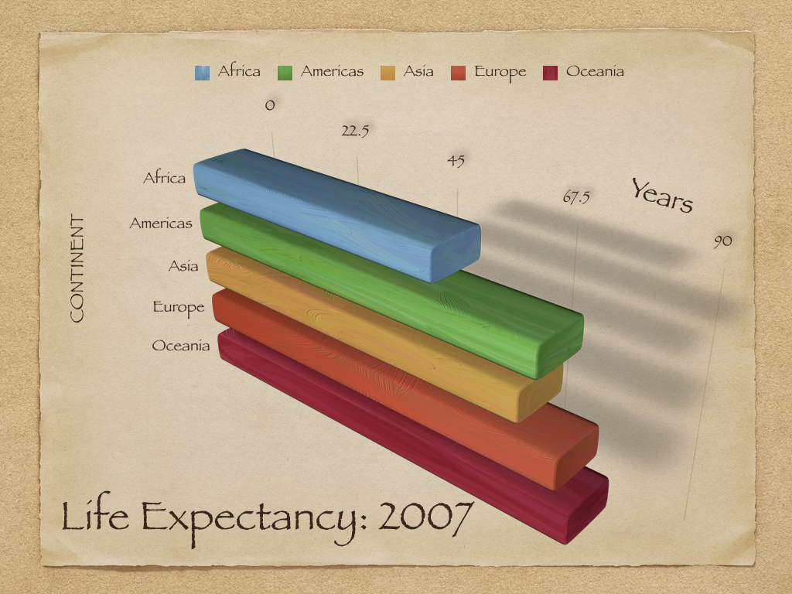
Exemple de chartjunk 2 à éviter

Exemple de graphique peu clair (sans être un “chartjunk”)
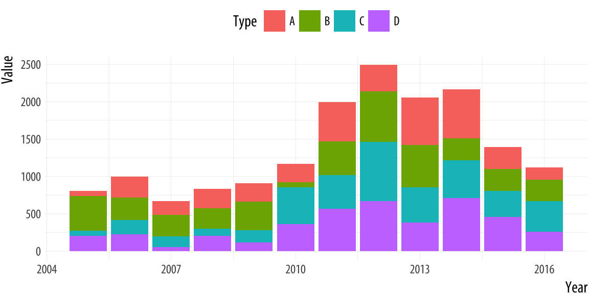
Les principes de la Gestalt (perception visuelle)
La psychologie de la Gestalt explique comment notre cerveau organise les éléments visuels en groupes. Comprendre ces principes permet de créer de l’ordre dans vos graphiques sans ajouter de « chartjunk » (Knaflic 2019).
- Proximité : nous percevons les objets proches les uns des autres comme appartenant au même groupe.
- Similitude : les objets partageant une couleur, une forme ou une taille similaire sont perçus comme liés.
- Enclosure (encadrement) : les objets entourés par une limite visuelle sont perçus comme un groupe.
- Clôture : notre cerveau « complète » les formes incomplètes (ex. : pas besoin d’un cadre complet autour d’un graphique).
- Continuité : nous suivons naturellement les lignes les plus fluides.
- Connexion : des éléments reliés par une ligne sont perçus comme plus liés que par la simple couleur ou forme.
Gestalt - illustration
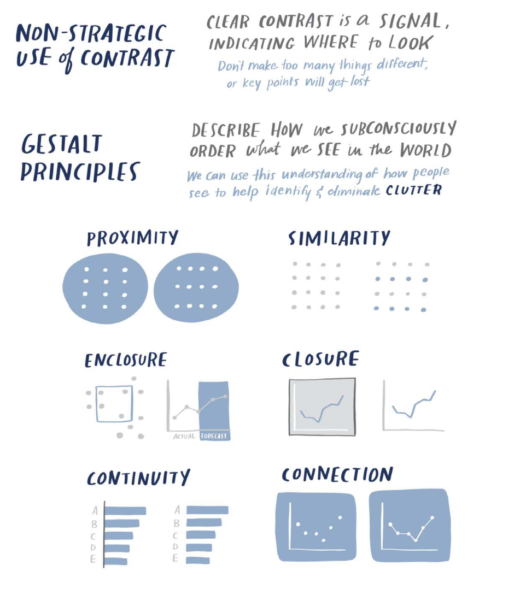
Les attributs pré-attentifs (attirer l’attention)
Ce sont des signaux visuels que notre cerveau traite en quelques millisecondes, avant même que nous ne prêtions une attention consciente. Utilisez-les pour guider l’œil de votre audience (Knaflic 2019).
Les plus puissants :
- La couleur : l’outil le plus fort, à utiliser avec parcimonie pour mettre en valeur un point précis.
- La taille : les éléments plus grands signalent une importance supérieure.
- La position : ce qui est en haut à gauche est vu en premier.
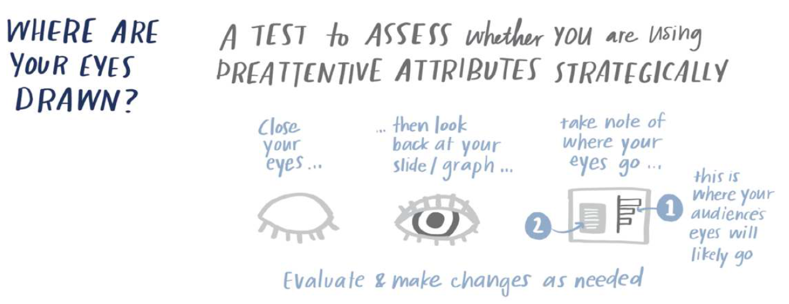
Théorie : la grammaire visuelle
La grammaire fondamentale
Un graphique n’est pas un dessin artistique, c’est une conversion systématique.
Le principe clé (C. Wilke) : toutes les visualisations de données mappent des valeurs de données (chiffres, catégories) vers des caractéristiques visuelles quantifiables du graphique.
Nous appelons ces caractéristiques des esthétiques (aesthetics).
Les types d’esthétiques
Une esthétique décrit un aspect d’un élément graphique.
- Position (x, y) : où se trouve l’élément.
- Forme (shape) : rond, carré, triangle…
- Taille (size) : rayon, aire.
- Couleur (color) : teinte ou saturation.
- Ligne (type/width) : plein, pointillé, épaisseur.
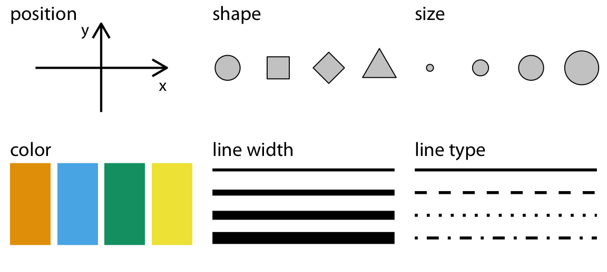
Attention au type de données
Certaines esthétiques (position, taille, couleur) peuvent représenter des données continues, tandis que d’autres (forme, type de ligne) ne peuvent représenter que des données discrètes.
Comprendre vos données
Avant de choisir une esthétique, il faut identifier le type de vos variables.
| Type de variable | Description | Exemples | Échelle appropriée |
|---|---|---|---|
| Quantitative continue | Nombres arbitraires (réels) | 1.3, 5.7, Température | Continue |
| Quantitative discrète | Unités distinctes (entiers) | 1, 2, Nombre d’enfants | Discrète |
| Qualitative non-ordonnée | Catégories sans hiérarchie | Chien, Chat, Pays | Discrète (Facteur) |
| Qualitative ordonnée | Catégories avec hiérarchie | Bon, Moyen, Mauvais | Discrète (Facteur ordonné) |
| Date / Temps | Moments spécifiques | 14 Juillet, 12:00 | Continue ou Discrète |
Les échelles (scales) : le pont
Pour passer de la donnée à l’esthétique, nous avons besoin d’une échelle (scale).
C’est une fonction mathématique qui définit un mapping unique (one-to-one). Si l’échelle n’est pas unique, le graphique est ambigu.
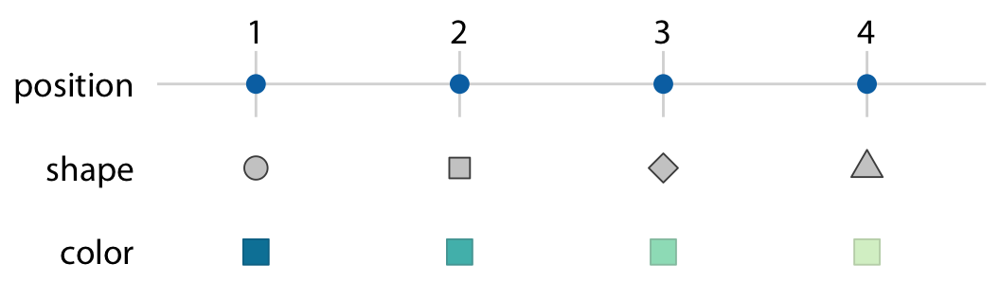
Cas d’école : même données, visualisations différentes
Imaginons des données météo (4 villes, températures journalières). Selon le mapping choisi, l’histoire change.
Mapping 1 : évolution temporelle
- X : jour (Temps)
- Y : température (Continu)
- Couleur : ville (Discret)
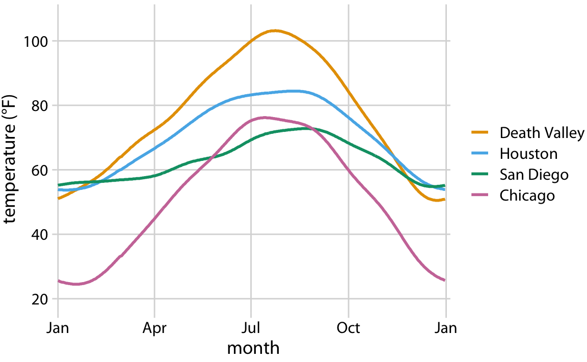
Mapping 2 : intensité et comparaison
- X : mois (Discret ordonné)
- Y : ville (Discret)
- Couleur : température (Continu)
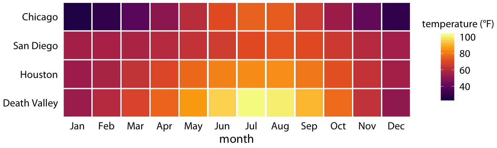
La multidimensionnalité
On peut mapper plus de 3 variables. Exemple ici avec 5 variables :
- Cylindrée \(\rightarrow\) X
- Efficacité \(\rightarrow\) Y
- Puissance \(\rightarrow\) Couleur
- Poids \(\rightarrow\) Taille
- Cylindres \(\rightarrow\) Forme
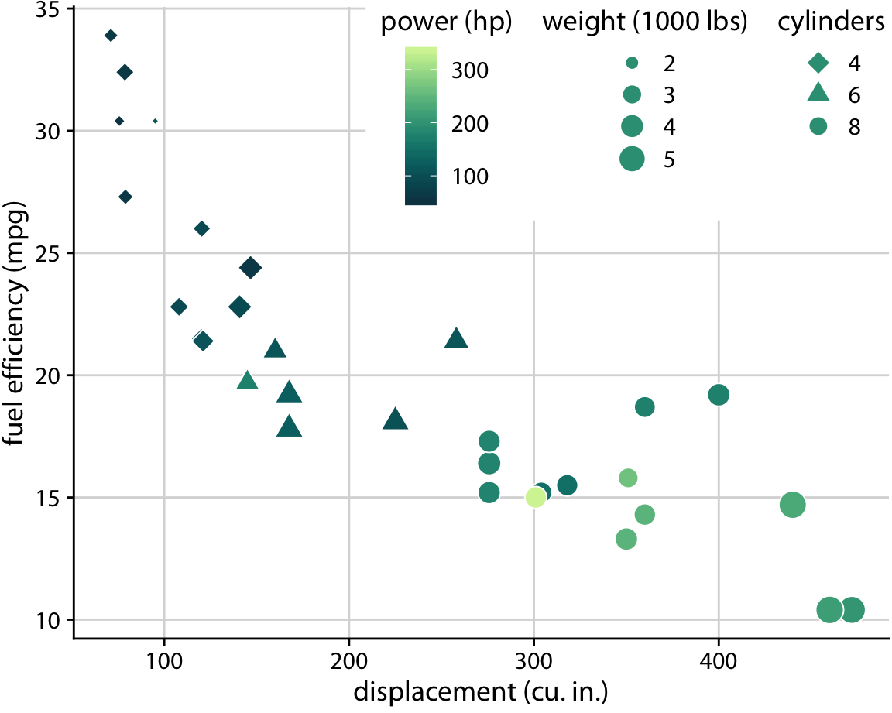
Exemple concret avec le jeu de données ifood
Ce graphique illustre parfaitement le concept. Chaque point est un client, et nous visualisons 4 dimensions d’information simultanément via ggplot2.
Atelier pratique : construire pas à pas
Méthodologie
Nous allons suivre la méthode de Kieran Healy pour construire un graphique complexe, couche par couche, en appliquant rigoureusement la grammaire des graphiques.
Source : Data Visualization: A Practical Introduction, Chapter 3.
L’objectif est de comprendre comment ggplot2 empile les couches :
Données -> mapping -> géométrie -> statistiques -> échelles -> thème
Préparation et “Tidy Data”
Nous utilisons le jeu de données gapminder (Espérance de vie, PIB, Population par pays et par an) déjà inclus dans R de base.
| Sélection aléatoire de 10 lignes du jeu de données gapminder | |||||
|---|---|---|---|---|---|
| Country | Continent | Year | Life exp | Population | GDP per capita |
| Sao Tome and Principe | Africa | 1972 | 56.5 | 76,595 | 1,533 |
| Philippines | Asia | 1992 | 66.5 | 67,185,766 | 2,279 |
| Singapore | Asia | 1952 | 60.4 | 1,127,000 | 2,315 |
| Cote d'Ivoire | Africa | 1967 | 47.4 | 4,744,870 | 2,052 |
| New Zealand | Oceania | 1992 | 76.3 | 3,437,674 | 18,363 |
| Burundi | Africa | 2007 | 49.6 | 8,390,505 | 430 |
| Central African Republic | Africa | 1952 | 35.5 | 1,291,695 | 1,071 |
| Syria | Asia | 1987 | 67.0 | 11,242,847 | 3,117 |
| Bulgaria | Europe | 1977 | 70.8 | 8,797,022 | 7,612 |
| Ecuador | Americas | 1992 | 69.6 | 10,748,394 | 7,104 |
Rappel du concept de Tidy Data
Pour que ggplot2 fonctionne, vos données doivent être ordonnées (tidy). C’est une structure spécifique :
- Une variable = une colonne.
- Une observation = une ligne.
- Une valeur = une cellule.
Le piège du format “Large”
Si vos données sont en format “Large” (ex: une colonne par année : 1990, 1991, 1992…), vous ne pourrez pas mapper l’année sur l’axe X. Vous devez d’abord les pivoter en format “Long” (une colonne “Année”, une colonne “Valeur”) avec pivot_longer().
Exemple Tidy Data
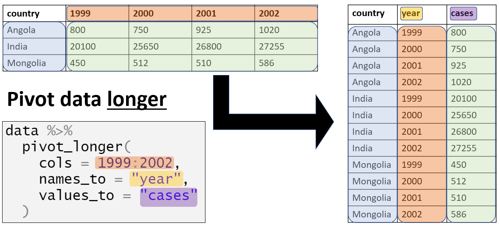
Étape 1 : la toile vierge
On commence par déclarer l’objet graphique en lui fournissant les données.

Résultat : rien ne s’affiche ! C’est normal, nous avons défini la source des données, mais nous n’avons pas encore expliqué à R comment les représenter.
Étape 2 : le mapping (aes)
On définit les axes dans l’esthétique (aes). On dit à R : “Prends la colonne PIB pour l’axe X et l’Espérance de vie pour l’axe Y”.
Résultat : ggplot a préparé la grille. Il a scanné les données pour trouver les minimums et maximums et a dessiné les axes correspondants. Mais il ne sait toujours pas quelle forme dessiner.
Étape 3 : ajouter un “Geom”
On ajoute une couche géométrique (geom) pour représenter les données concrètement. Ici, des points (geom_point) pour faire un nuage de points.
Observation : nous avons un problème de lisibilité. Les points se chevauchent massivement (overplotting) et la relation n’est pas linéaire, elle semble suivre une courbe.
Étape 4 : ajouter une tendance
La grammaire fonctionne par couches (layers). Ajoutons une couche de lissage statistique (geom_smooth) au-dessus des points pour visualiser la tendance générale.
Par défaut, geom_smooth() utilise une méthode GAM (Generalized Additive Model) pour les grands jeux de données, ce qui donne cette courbe flexible.
Étape 5 : ajuster l’échelle (scales)
Le PIB n’est pas distribué normalement. La plupart des pays sont pauvres (à gauche), et quelques-uns très riches (à droite). Cela “écrase” le graphique. Utilisons une échelle logarithmique sur l’axe X.
Résultat : la relation devient beaucoup plus claire et linéaire. L’échelle log est un outil puissant pour les données économiques.
Étape 6 : formater les étiquettes
Les chiffres scientifiques sur l’axe X (1e+04) sont incompréhensibles pour une audience métier. Utilisons le package scales pour formater cela en dollars.
Piège classique : mapping vs setting
Attention ! Il y a une différence fondamentale entre mapper une variable et fixer (setting) une valeur esthétique.
L’erreur (Mapping)
Mettre “purple” dans aes().
Pourquoi ça rate ? aes() s’attend à une variable (une colonne). Comme elle ne la trouve pas, elle crée une colonne fictive nommée “purple” et utilise la palette de couleur par défaut (rouge).
Étape 7 : finitions (labels & alpha)
Rendons le graphique présentable pour une publication :
- Ajout de transparence (
alpha) pour mieux voir la densité des points. - Ajout de titres clairs et sourcés (
labs).
p <- ggplot(data = gapminder, mapping = aes(x = gdpPercap, y=lifeExp))
p + geom_point(alpha = 0.3) +
geom_smooth(method = "gam") +
scale_x_log10(labels = scales::dollar) +
labs(x = "PIB par habitant (échelle log)",
y = "Espérance de vie (années)",
title = "Croissance économique et espérance de vie",
subtitle = "L'espérance de vie augmente avec le PIB, mais plafonne.",
caption = "Source: Gapminder. Adapté de K. Healy.")Étape 7 : finitions (labels & alpha)
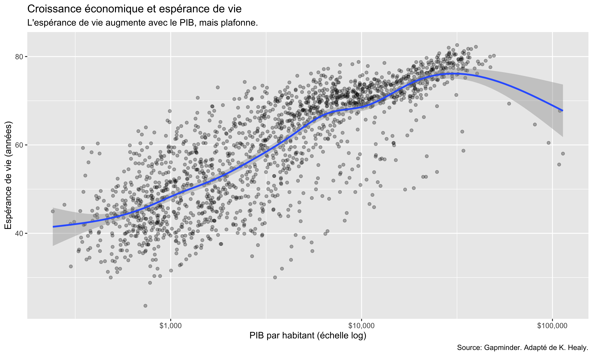
Étape 8 : ajouter de l’information
Pouvons-nous ajouter une 3ème dimension sans surcharger ? Mappons le continent à la couleur. Cela permet de voir les disparités géographiques.
# Note : on ajoute color = continent dans le mapping global
p <- ggplot(data = gapminder,
mapping = aes(x = gdpPercap, y = lifeExp, color = continent, fill = continent))
p + geom_point(alpha = 0.3) +
geom_smooth(method = "loess") +
scale_x_log10(labels = scales::dollar) +
labs(title = "Disparités économiques et sanitaires par continent",
x = "PIB par Habitant", y = "Espérance de vie")Étape 8 : ajouter de l’information
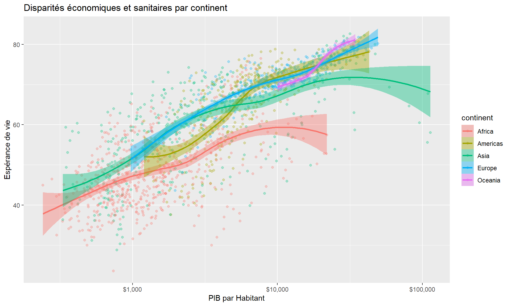
Sauvegarder son image
Pour exporter votre image en haute qualité (vectoriel pour impression, PNG pour le web), utilisez la fonction ggsave().
# 1. Créer l'objet final
mon_graphique <- p + geom_point(alpha = 0.3) + scale_x_log10()
# 2. Sauvegarder
# Le format PDF est vectoriel : il ne pixelise pas au zoom.
ggsave(filename = "graphique_final.pdf", plot = mon_graphique, width = 8, height = 6)
# Le format PNG est matriciel : définir un haut DPI pour la qualité.
ggsave(filename = "graphique_final.png", plot = mon_graphique, dpi = 300)Partie 2 : la narration (storytelling)
Du graphique à l’histoire
Avoir un graphique propre et techniquement juste constitue la première étape. La seconde consiste à l’utiliser pour convaincre une audience.
Le storytelling permet de passer de :
« Voici les données sur les ventes du T3. »
À :
« Voici pourquoi nos ventes ont chuté au T3 et ce que nous devons faire pour inverser la tendance au T4. »
C’est l’art de transformer une observation froide en un récit qui incite à l’action.
Étape 1 : comprendre le contexte
Avant même de créer un graphique, Knaflic suggère de fermer l’ordinateur pour définir le contexte. Il est nécessaire de répondre clairement à la question : « So what ? » (et alors ?) (Knaflic 2019).
Trois questions fondamentales à se poser :
- Qui est l’audience ? (Être spécifique).
- Que doivent-ils savoir ou faire ?
- Comment les données vont-elles aider à faire ce point ?
L’outil de synthèse : la « Big Idea »
Il est impératif de pouvoir articuler le message en une seule phrase. Si cela est impossible, l’idée manque probablement de clarté (Knaflic 2019).
Les 3 composantes de la Big Idea
- Articuler un point de vue unique ;
- Exprimer ce qui est en jeu (les enjeux) ;
- Former une phrase complète (sujet, verbe, complément).
Exemple : « Le programme pilote d’été a réussi à améliorer la perception des sciences par les élèves ; il convient d’approuver le budget pour continuer ce programme important. »
L’histoire de 3 minutes
Si le temps de présentation était réduit à 3 minutes (au lieu de 30), que faudrait-il dire ?
Cet exercice est crucial pour :
- Aller à l’essentiel ;
- Supprimer les détails superflus ;
- Savoir exactement où emmener l’audience.
« Connaître son histoire de 3 minutes permet de rester concis et clair, même en disposant de davantage de temps. »
Étape 2 : le storyboarding (low-tech)
Éviter de commencer par le logiciel de présentation. L’outil force à penser en « slides » et en « titres », ce qui nuit à la créativité narrative.
Le processus en deux temps :
- Brainstorming : faire sortir les idées et les noter en vrac sur des post-it, sans filtre.
- Édition : organiser, trier et éliminer le superflu pour créer une structure logique.
Pourquoi les post-it ? Il est aisé de jeter un post-it, alors qu’il est difficile de supprimer une slide ayant nécessité du temps de conception.
Étape 3 : l’arc narratif (the narrative arc)
Une présentation business classique est souvent linéaire et ennuyeuse. Une histoire captivante suit une forme en arc spécifique (Knaflic 2019).
- Intrigue (plot) : le contexte, le statu quo. Poser le décor.
- Montée de l’action (rising action) : introduire la tension. Le problème, le déséquilibre, l’opportunité manquée.
- Climax : le point de bascule. La révélation majeure des données. « Si rien n’est fait, voilà ce qui arrive ».
- Action descendante (falling action) : l’analyse des solutions, les options possibles.
- Résolution (ending) : l’appel à l’action clair et la nouvelle réalité future.
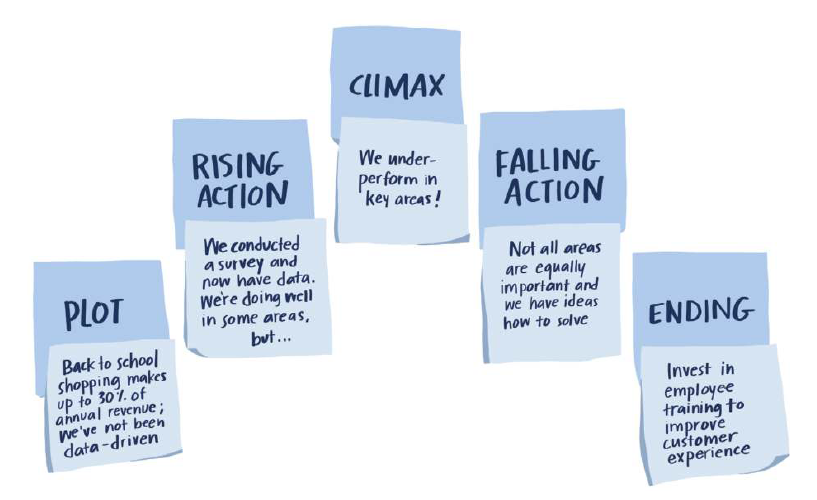
Le moteur de l’histoire : la tension
Si l’histoire n’a pas de tension, l’audience ne l’écoutera pas. Dans la data, la tension provient souvent de l’écart entre :
- Ce que nous voulons vs ce que nous avons ;
- Les attentes vs la réalité ;
- Le risque de l’inaction vs le bénéfice de l’action.
Question clé
Pour l’audience, qu’est-ce qui est en jeu ? (what is at stake ?) Si la réponse est « rien », la réunion et le graphique sont inutiles.
Distinction : présentation live vs « slideument »
Knaflic insiste sur la différence de format selon le mode de consommation (Knaflic 2019).
Le « slideument » (slide + document) est l’ennemi : trop dense pour être présenté, pas assez détaillé pour être lu seul. Il faut choisir.
| Présentation live (en direct) | Document autonome (email / PDF) |
|---|---|
| L’orateur est présent pour expliquer. | L’orateur est absent. Le document doit parler seul. |
| Construction progressive : afficher les éléments un par un pour contrôler l’attention. | Slide dense et annotée : utiliser du texte pour guider la lecture (titres actifs, annotations). |
| Peu de texte à l’écran. | Plus de texte explicatif. |
Exemple d’application : le live vs statique
Source : exercice 6.6 de « Let’s Practice! » - analyse des délais d’embauche.
En live (séquencé)
- Afficher les axes vides (contexte).
- Afficher la ligne « objectif » (tension).
- Afficher les données réelles qui dépassent l’objectif (climax).
- Discuter des solutions (résolution).
En statique (annoté)
Une seule slide finale contenant :
- Un titre d’action (« Les délais d’embauche dépassent l’objectif ») ;
- Les graphiques complets ;
- Des annotations textuelles pointant directement vers les pics de données critiques pour expliquer le « pourquoi ».
La phrase mémorable (pithy repeatable phrase)
Pour que l’histoire marque les esprits, il est recommandé de créer une phrase courte, accrocheuse et répétable qui résume la « Big Idea » (Knaflic 2019).
Caractéristiques :
- Courte ;
- Facile à dire ;
- Mémorable.
Utilisation : La répéter au début, au milieu et à la fin de la présentation garantit que l’audience reparte avec le message clé.
Exemples historiques : John Snow (1854)
En plaçant chaque décès sur une carte de Londres, le Dr Snow a révélé que les cas de choléra se concentraient autour d’une pompe à eau spécifique.
L’arc narratif de Snow :
- Intrigue : choléra à Londres, panique générale.
- Tension : les gens meurent, la cause est inconnue (théorie des miasmes vs contagion).
- Climax : la carte montre la concentration indéniable autour de Broad Street.
- Résolution : retirer la poignée de la pompe à eau pour stopper l’épidémie.

Exemples historiques : Florence Nightingale (1858)
Infirmière et statisticienne, elle utilise ce « diagramme de la rose » dans un but politique précis : prouver que les maladies infectieuses (en bleu) tuent bien plus que les combats (en rouge).
Big Idea : « Nous perdons plus de soldats à cause de l’hygiène qu’à cause de l’ennemi ; il faut financer la réforme sanitaire. »

Exemples historiques : Minard (1869)
Considéré par Edward Tufte comme « probablement le meilleur graphique statistique jamais dessiné ».
Ce graphique retrace la campagne de Russie de Napoléon en 1812 et illustre l’intégration de six variables dans un seul visuel :
- La taille de l’armée : l’épaisseur de la ligne
- La position géographique : les axes (x, y)
- La direction : le sens de la ligne (aller en beige, retour en noir)
- Le temps : le déroulé de l’histoire
- La température : le graphique de températures en bas (pendant la retraite)
Image Minard

Partie 3 : la synthèse/dashboard
Le dashboard
Un dashboard n’est pas un cimetière de graphiques où l’on déverse toutes les données disponibles. C’est un instrument de pilotage.
Un bon dashboard :
- Répond à des questions précises en un coup d’oeil.
- Est lisible en 5 secondes (règle des 5 secondes).
- A une hiérarchie visuelle claire (du plus important au détail).
- Applique tous les principes de design vus précédemment.
Qu’est-ce un dashboard marketing ?
C’est le cockpit du pilote : il ne montre pas toutes les données, seulement les instruments essentiels pour ne pas se crasher.
Définition (Pauwels et al.)
Un petit ensemble d’indicateurs interconnectés, couvrant le court terme (performance) et le long terme (marque), partagé dans l’organisation pour guider les décisions.
Il agrège les sources (GA4, Meta, CRM, SEO) pour répondre à : “Que se passe-t-il et que faire maintenant ?”
Ce qu’un dashboard n’est pas
Ce n’est pas :
- Un rapport PDF de 40 pages que personne ne lit.
- Une galerie de “jolis” graphiques sans lien logique.
- Un export Excel brut affiché sur un écran.
Un dashboard n’est pas bon si…
- Personne ne peut expliquer son utilité en une phrase.
- Il n’aide à prendre aucune décision concrète (budget, ciblage…).
- Les utilisateurs l’exportent systématiquement vers Excel pour “vraiment” travailler (mais ça reste utile)
Les trois types de dashboards
Le design dépend de l’audience et de l’objectif temporel.
| Type | Objectif | Audience | Caractéristiques |
|---|---|---|---|
| Stratégique | Santé globale (KPIs) | Direction (C-Level) | Vue d’hélicoptère, simple, peu d’interaction, mensuel/trimestriel. |
| Analytique | Comprendre les tendances | Analystes, Managers | Interactif, filtres, drill-down, comparaisons complexes. |
| Opérationnel | Temps réel, alertes | Terrain (Traffic Manager) | Mise à jour fréquente, très granulaire, focus sur l’immédiat. |
Cas pratique : analyse A/B
Contexte et objectif
Nous allons analyser les résultats d’une campagne publicitaire menée en parallèle sur Google AdWords et Facebook.
L’objectif : déterminer quelle plateforme offre le meilleur retour sur investissement (ROI) et où allouer le budget futur.
Nous allons charger des données brutes, les nettoyer, et créer des visualisations impactantes.
Préparation des données
Nous chargeons les librairies et le fichier CSV. Notez que les données sont souvent dans un format “Large” (une colonne par plateforme et par métrique) qui n’est pas idéal pour l’analyse.
library(dplyr)
library(tidyr)
library(ggplot2)
library(gt)
# Note: Chemin relatif à adapter selon votre dossier
data_wide <- read.csv("../data_full/facebook_vs_adword/A_B_testing_dataset.csv")
# Affichons les noms des colonnes pour comprendre le problème
names(data_wide) [1] "date_of_campaign" "facebook_ad_campaign"
[3] "facebook_ad_views" "facebook_ad_clicks"
[5] "facebook_ad_conversions" "facebook_cost_per_ad"
[7] "facebook_ctr" "facebook_conversion_rate"
[9] "facebook_cost_per_click" "adword_ad_campaign"
[11] "adword_ad_views" "adword_ad_clicks"
[13] "adword_ad_conversions" "adword_cost_per_ad"
[15] "adword_ctr" "adword_conversion_rate"
[17] "adword_cost_per_click" Nous transformons les données de format “Large” vers “Long”. C’est une étape cruciale : nous voulons une colonne platform pour pouvoir grouper nos analyses.
data_long <- data_wide %>%
pivot_longer(
cols = starts_with("facebook_") | starts_with("adword_"),
names_to = c("platform", ".value"),
names_pattern = "(facebook|adword)_(.*)"
) %>%
rename(views = ad_views, clicks = ad_clicks,
conversions = ad_conversions, cost = cost_per_ad)
# Vérifions le résultat
head(data_long)# A tibble: 6 × 10
date_of_campaign platform ad_campaign views clicks conversions cost ctr
<chr> <chr> <chr> <int> <int> <int> <int> <dbl>
1 2021-12-22 facebook FACEBOOK AD 3172 62 14 141 1.95
2 2021-12-22 adword ADWORD AD 5754 64 9 177 1.11
3 2021-12-24 facebook FACEBOOK AD 3211 38 9 186 1.18
4 2021-12-24 adword ADWORD AD 4954 73 6 54 1.47
5 2021-12-25 facebook FACEBOOK AD 1936 53 15 66 2.74
6 2021-12-25 adword ADWORD AD 4702 38 9 187 0.81
# ℹ 2 more variables: conversion_rate <dbl>, cost_per_click <dbl>Nous agrégeons les données pour calculer les indicateurs de performance clés (KPI) globaux.
summary_stats <- data_long %>%
group_by(platform) %>%
summarise(
total_cost = sum(cost),
total_conversions = sum(conversions),
total_clicks = sum(clicks),
.groups = 'drop'
) %>%
mutate(
# CPA = Coût Total / Nombre de Conversions
cpa = total_cost / total_conversions,
# Taux de Conv = (Conversions / Clics) * 100
overall_conversion_rate = (total_conversions / total_clicks) * 100
) %>%
# Esthétique : majuscules pour les graphiques
mutate(platform = toupper(platform))Aperçu des résultats
Voici le tableau récapitulatif de nos indicateurs calculés. Le tableau est propre, mais il ne raconte pas encore une histoire immédiate.
summary_stats %>%
gt() %>%
fmt_currency(columns = c(total_cost, cpa), currency = "EUR") %>%
fmt_percent(columns = overall_conversion_rate, scale_values = FALSE, decimals = 2)| platform | total_cost | total_conversions | total_clicks | cpa | overall_conversion_rate |
|---|---|---|---|---|---|
| ADWORD | €124,741.00 | 5933 | 60128 | €21.02 | 9.87% |
| €156,610.00 | 11975 | 44196 | €13.08 | 27.10% |
Comparaison du CPA (coût par acquisition)
Question : combien nous coûte, en moyenne, l’acquisition d’un client sur chaque plateforme ? Interprétation : plus le CPA est bas, meilleure est la rentabilité.
ggplot(summary_stats, aes(x = platform, y = cpa, fill = platform)) +
geom_bar(stat = "identity", width = 0.6) +
geom_text(aes(label = paste0(round(cpa, 2), " €")), vjust = -0.5, size = 6, fontface = "bold") +
labs(
title = "Coût par acquisition (CPA) par plateforme",
subtitle = "Facebook est nettement plus rentable pour acquérir un client.",
x = NULL, # Pas besoin de label X car évident
y = "Cout par Acquisition (€)"
) +
theme_minimal(base_size = 16) +
theme(
legend.position = "none",
panel.grid.major.x = element_blank()
) +
scale_fill_manual(values = c("#325494", "#58DDB3")) # Couleurs UBD ThemeComparaison du CPA (coût par acquisition)
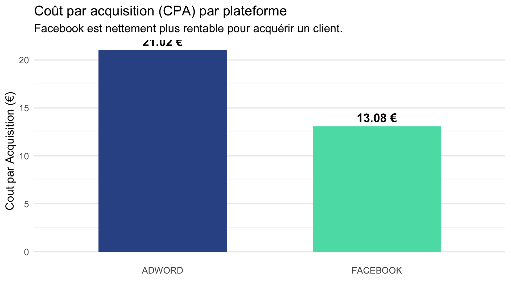
Comparaison du taux de conversion
Question : une fois que l’utilisateur a cliqué, quelle est la probabilité qu’il achète ? Interprétation : un taux plus élevé indique un trafic plus qualifié ou une meilleure adéquation produit/audience.
ggplot(summary_stats, aes(x = platform, y = overall_conversion_rate, fill = platform)) +
geom_bar(stat = "identity", width = 0.6) +
geom_text(aes(label = paste0(round(overall_conversion_rate, 2), " %")), vjust = -0.5, size = 6, fontface = "bold") +
labs(
title = "Taux de conversion global",
subtitle = "Le trafic Facebook transforme mieux que celui d'AdWords.",
x = NULL,
y = "Taux de Conversion (%)"
) +
theme_minimal(base_size = 16) +
theme(
legend.position = "none",
panel.grid.major.x = element_blank()
) +
scale_fill_manual(values = c("#325494", "#58DDB3"))Comparaison du taux de conversion
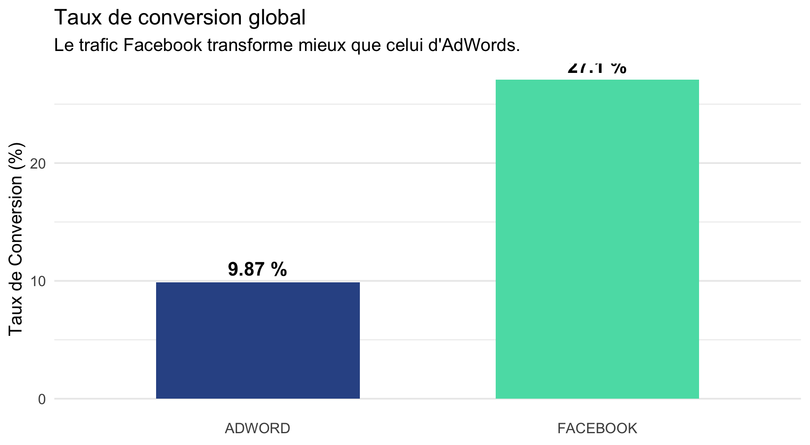
Conclusion
De l’artisan à l’architecte
Pour réussir dans la visualisation des données, il est essentiel d’adopter une approche structurée, de la conception initiale à la présentation finale.
Adopter les étapes clés
- Commencer comme un artisan :
- Maîtriser les outils de construction graphique (
ggplot2,tidyr). - Nettoyer les graphiques en éliminant le « chartjunk » (bruit graphique).
- Rechercher l’excellence graphique en maximisant le ratio « encre-données ».
- Maîtriser les outils de construction graphique (
- Penser comme un conteur :
- Définir clairement la « big idea » (l’idée principale) du message.
- Guider l’œil de l’audience vers une conclusion unique et un appel à l’action.
- Utiliser l’arc narratif pour structurer l’histoire et maximiser l’impact.
- Agir comme un architecte :
- Assembler les graphiques de manière logique et hiérarchisée dans un dashboard.
- Faciliter la prise de décision en garantissant la lisibilité et la pertinence des indicateurs.
- Concevoir le dashboard comme un instrument de pilotage plutôt que comme un simple rapport.
Définir l’objectif final
Montrer les données à travers un bon graphique. Permettre de prendre de meilleures décisions grâce à un bon dashboard.
Démo dashboard app Shiny
Références
Costigan-Eaves, Patricia. 1986. “Edward R. Tufte The Visual Display of Quantitative Information.” Information Design Journal 4 (3): 235–36. https://doi.org/10.1075/idj.4.3.12cos.
Few, Stephen. 2006. “Information Dashboard Design.”
Healy, Kieran. 2024. Data Visualization: A Practical Introduction. Princeton University Press.
Knaflic, Cole Nussbaumer. 2015. Storytelling with Data: A Data Visualization Guide for Business Professionals. Hoboken, New Jersey: Wiley.
———. 2019. Storytelling with Data: Let’s Practice! Hoboken, New Jersey: John Wiley & Sons, Inc.
Pauwels, Koen, and David J. Reibstein. 2023. “The Modern Marketing Dashboard: Back to the Future.” NIM Marketing Intelligence Review 15 (1): 10–17. https://doi.org/10.2478/nimmir-2023-0002.
The Grammar of Graphics. 2005. Statistics and Computing. New York: Springer-Verlag. https://doi.org/10.1007/0-387-28695-0.